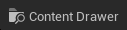

Getting Started (Installation and Setup)
Option 1: Cloning UnrealEngine Project from Github
The following steps are meant broadly as the specific instructions might change over time. You will need to download the latest version of Xcode.
- Navigate to the Unreal Engine website.
- Register an account.
- Request access to the GitHub org
- Fork the UnrealEngine repo and clone to local
- Follow the README to compile and run the Unreal Editor. The Editor uses a version of the Unreal Engine which can be downloaded by running a few installation scripts in the
UnrealEngineproject that download the engine and game files.
Option 2: Install Using Unreal Launcher
We can also install Unreal Engine through the Unreal Launcher.
Starting a Project
Before starting a project, make sure to:
- Load static content
- Enable raytracing
Feel free to pick a template project from the project browser, such as a first-person or a third-person game. Once the new project opens a .uproject file is created in the default ~/Documents/Unreal Projects directory. We can click this file directly to open the project to continue where we left it off in the future.
Unreal Cheat Sheet
Key Bindings and Shortcuts
| Shortcut | Function | Optional explanation |
|---|---|---|
| RMB | Rotate camera | |
| RMB + W or A/S/D | Movement front/left/back/right | |
| RMB + E or Q | Movement up or down | |
| Scroll Wheel Up/Down + RMB | Adjust camera speed | |
| LMB | Select object in world | |
| Q | Object selection mode | |
| W | Movement translation mode | |
| E | Rotation translation mode | |
| R | Scale translation mode | |
| Del | Delete selected object | |
| H | Hide selected object | |
| Ctrl + D | Duplicate selected object | Another shortcut is holding Opt and dragging the selected object |
| Hold Shift + LMB | Select multiple objects | |
| Hold Ctrl + LMB | Deselect multiple objects from a multi-object selection | |
| F | Focus on selected object | If we’re lost in our scene we can always select an object in the Outliner window and press F to re-focus on the object |
| G | Game view mode | Hides widgets, see the world as if in-game |
| Cmd + F11 | Immersive mode | Hides all windows and shows the world in full screen (note: we may also need to press Fn) |
| Ctrl + Space | Open Content Drawer | The Content Drawer is what contains all of our in-game assets (3D/2D assets, code, etc.) |
| Opt + P | Play game | |
| Esc | Exit game and go back to Edit mode | |
| Shift + 1 or 2/3/… | Change Unreal Editor mode | The default is Selection Mode. Other modes include Landsaping Mode, Foliage Mode, etc. These bring up various tools to edit landscapes and make foliage (as their names suggest) |
| Hold L + LMB | Rotate sun |
View Mode Options
| View mode | Function | Optional explanation |
|---|---|---|
| Wireframe | Shows only the wireframe mesh | |
| Unlit | Shows the world disregarding lighting information | Useful for visibility when editing in dark environments |
| Light only | The world with lighting alone (i.e. without material information) |
Translation and Snap Tools
The translation modes and snap tools are available in the top-right corner of the viewport.
From left to right, we have:
- Object selection mode
- Translation mode
- Rotation mode
- Scale mode
- Toggle for coordinate system (global vs local) relative to which the transform gizmo is shown
- Surface snapping options (controls how objects snap to existing surfaces)
- Translation snapping
- Rotation snapping
- Scale snapping
- Camera speed adjustment
- Minimize/maximize current viewport
The default viewport includes a grid, this can be disabled in Show menu in the top-left corner of the viewport by un-checking Grid.
Working with Objects
There are two ways to add objects to the scene. The first is through Add Object in the top-left corner.
Click
The second way is by using the Content Drawer in the bottom-left corner.
Click  or use shortcut Ctrl + Space
The latter method is for adding custom game objects (blueprints as well as 2D/3D assets and more).
We often need to see where a particular game asset is located in the Content Drawer. The shortcut to find any object inside the Content Drawer is Ctrl + B while having the object selected.
All the assets that make up our game, such as custom 3D assets, custom blueprints (code), etc are stored within the /Content folder of the project.
UI Windows
Details
The Details window looks as follows.
It contains all the details about a selected object such as:
- Transformation information (coordinates, angle of rotation, and scale)
- Material information
- Physics and many more…
Outliner
The Outliner window looks as follows.
It contains all the objects that make up the scene, as well as options to show/hide, save, and pin objects:
Blueprint Programming
Assuming we’ve selected the third person template, go into the Content Browser and go to /Content/ThirdPerson/Blueprints to access the blueprints of the third person character.
Click on the humanoid. Feel free to dock the newly opened window (as a new tab) next to the open viewport in the Unreal Editor.
A blueprint consists of three views:
- EventGraph
- Construction Script
- Viewport
EventGraph
Contains most of the blueprint’s logic.
Construction Script
Viewport
This view shows everything within the selected blueprint as an object. Objects in a blueprint are called components. The Components window is the equivalent of the Outliner window but for blueprints. Rather than showing every object in the world, it shows every component in the blueprint.
The My Blueprint window contains all the nodes and variables contained in the blueprint. We can click on the EventGraph in the Graphs tab of this window to go into the EventGraph view directly.